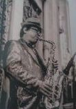

吴越

毕业于上海音乐学院，1990年开始学习并演奏萨克斯，是中国最早一代接触和演奏爵士乐的音乐家之一。1996年组建了上海第一支本地爵士乐队“Walking 5”，并参加了一系列重要的演出活动。美国前总统克林顿访问上海时特意看了他和乐队表演，世界著名小号演奏家温顿马萨利斯到上海演出时也和他的乐队一起交流演出。2000年赴日本东京留学，在东京爵士音乐专科学院研修爵士理论及演奏，在日本留学期间曾多次和当地著名爵士演奏家一起交流演出。回国以后他在上海音乐学院和诸多美国音乐家一起为爵士音乐的普及和发展举办了一系列讲座和音乐会并开始从事爵士乐的教学工作。2004年参加了第一届上海虹桥爵士音乐节，和众多国内外知名音乐家同台献演。同年10月他应邀赴芝加哥参加亚洲美国爵士节的演出获得成功，成为有史以来中国第一位被美国邀请参加爵士节的音乐家。
楚剑影
现任上海剑影管乐器有限公司总经理，中国管乐学会会员，上海大管研究会理事，上海百灵管乐器厂有限公司特聘技术顾问及管乐器制造工程师。1983年至2000年参加各种大小演出活动，并为多名歌星担任萨克斯演奏员，在这期间在上海市工人文化宫担任萨克斯演奏员，多次参加每年的两会仪仗队的演奏和全运会仪仗队的演奏。为推广和普及萨克斯艺术做了大量的工作，并为培养中小学生学习萨克斯担任指导老师。并获得第三届全国青少年儿童艺术风采展示大赛优秀辅导教师奖。于2011年被评为全国青少年艺术教育先进工作者。
戈瑞清
1978年学习萨克斯.1980年--2002年任上海工人文化宫管弦乐团萨克斯手(1990年始在上海百老汇舞厅任萨克斯手);2005年元旦始为上海永安百货公司阳台萨克斯表演艺术家。由此至今，戈瑞清的萨克斯风在国內外产生了深远的影响，各主流媒体连续给于追踪报道。从2005年元旦至今，这座富有历史积淀的著名商厦的二楼阳台上，出现了位一袭黑西装.一顶黑礼帽的中年男子，一根流金铮亮的萨克斯管……他就是戈瑞清，上海著名的萨克斯演奏家。或轻柔婉约.缠绻情深，或飘逸洒脱.高亢激越……纷纷重现十里洋场的旧上海;引领潮头的新时代;历久弥新的国外经典，戈瑞清不仅向世人展现出了上海海纳百川的博大胸怀，更传递出了中国人的自信和情怀。戈瑞清是沪上著名的萨克斯演奏家，也是上海城市文化的一张名片。
鲍洁明
上海市萨克斯爱好者协会专家委员会委员，著名萨克斯演奏家，优秀教师。钢琴、小号、萨克斯、黑管等均能达到极具个性化的独奏水平，其中尤以萨克斯见长，在上海第二代萨克斯手中属元老级资深人士。曾与业内著名的郑德仁老师录制了多张“上海百()之老爵士乐”CD唱片，具有非常丰富的萨克斯演奏和教学经验，为上海市业界不可多得的优秀教师。为上海市业界不可多得的优秀教师。为上海市业界不可多得的优秀教师。为上海市业界不可多得的优秀教师。
陈宝兴

上海市萨克斯爱好者协会专家委员会委员，上海市音乐家协会会员，著名萨克斯演奏家，优秀教师。30多年来，由于对萨克斯乐器的深入研习，娴熟掌握萨克斯各种演奏技巧，通过流行爵士等多种风格的不同展示，生动演绎出萨克斯音乐特有的情感和魅力。曾无数次参与本市重大文体活动的文艺演出，并担任主要萨克斯手，广获听众的赞誉，拥有无数粉丝。2000年后，开始研习萨克斯教学理论和音乐心理学理论。多年来，在萨克斯教学活动中，陈老师十分注重把扎实的教学理论和教学实践相结合，形成了具有鲜明特色的教学风格，深受众多学生的喜爱。
刘振鸣
14岁学习萨克斯，从1994年至今与中外众多知名音乐家合作，对爵士乐和爵士理论有深入的研究，在爵士乐和声乐上力求新的发展。
沈敏
中国音乐家管乐协会会员，上海音乐家管乐协会会员，上海市萨克斯爱好者协会专家委员会委员，江苏省管乐协会会员。早在上世纪八十年代，沈敏老师即受邀加入上海市工人文化宫管乐团，担任主要萨克斯手。因技艺出众被选进代表队，多次参加全国运动会和上海市运动会等重大活动的仪仗表演。目前沈敏老师是上海东皇乐团的主要萨克斯手，活跃在上海及长三角各大社区及校园舞台上，为普及萨克斯文化，提高广大市民音乐素养发展等不可或缺的显著作用。同事，沈敏老师还应众多粉丝邀请，招收了众多萨克斯弟子，在其悉心指教下，弟子们的萨克斯技艺日益精进，纷纷赞扬沈敏老师传授有道。
孙幸
上海市萨克斯爱好者协会专家委员会委员，著名萨克斯演奏家，优秀教师。于上世纪八十年代初受邀加入上海大厦酒吧乐队，成为其中主要的萨克斯手，除在上海大厦长期驻场表演外，还受邀在上海各大星级宾馆和酒店参加各类活动。在此期间，孙幸老师还多次受上海电视台之邀参加专题节目的录制，收到主办方的充分肯定和赞誉。2000年起，受上海知音艺校的邀请，担任萨克斯老师。十多年来，经孙幸老师指导过的数百名学生，萨克斯考级通过率在90%以上。经其组织的学生乐队连续四年获得了“雅马哈卡拉OK管乐比赛”特等奖。连续多年被知音艺校评为“优秀教师”荣誉称号。
吴伟玉
上海市萨克斯爱好者协会专家委员会委员，著名萨克斯演奏家，优秀教师。1976年加入上海各大剧场，担任主要萨克斯手。后被邀加入上海第一家音乐茶座——上海国际饭店音乐茶吧，任首席萨克斯手。1986年，获上海市器乐比赛“二等奖”，并录制个人萨克斯演奏专辑。后加入上海电熨斗乐队，担任各大演唱会的主要伴奏，特别是在上海轻音乐团的几年中，曾在上海音乐厅、上海波特曼酒店、双层音乐厅、上海万人体育馆担任萨克斯独奏，广获嘉誉。1990年后，先后赴广州、厦门、海南等南方城市以及内地的各大宾馆、酒吧，举行巡回演出，为传播萨克斯文化做出了有益的贡献。吴老师的演奏特色：能演绎流行、爵士、拉丁舞多种风格的萨克斯作品。

xx老师真的指导有方巴拉巴拉